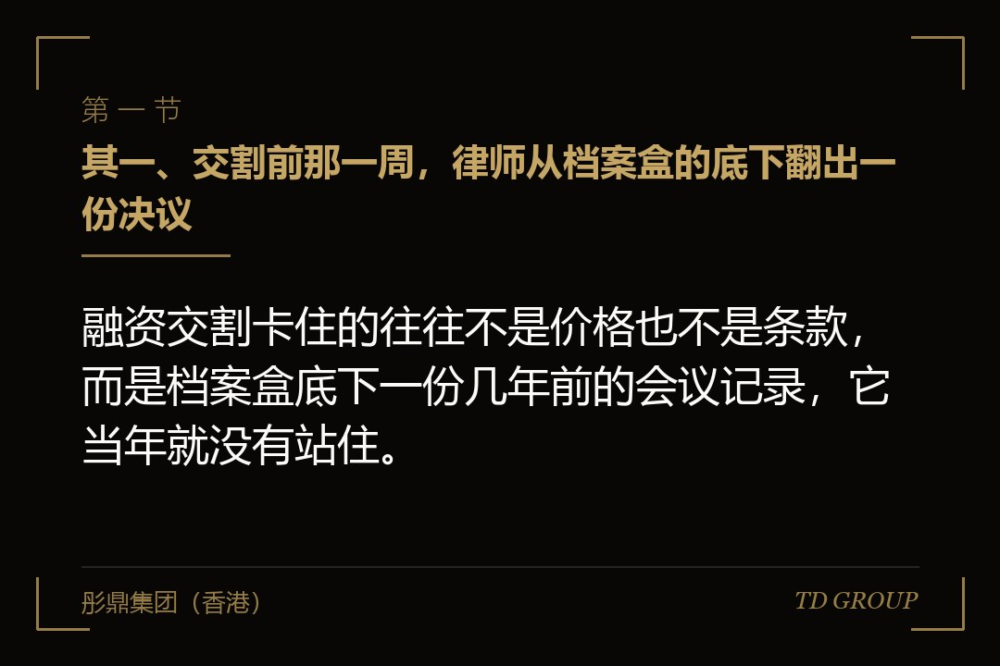
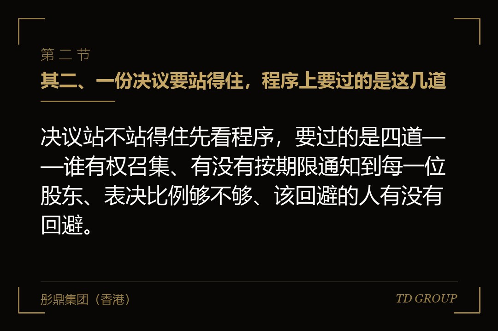
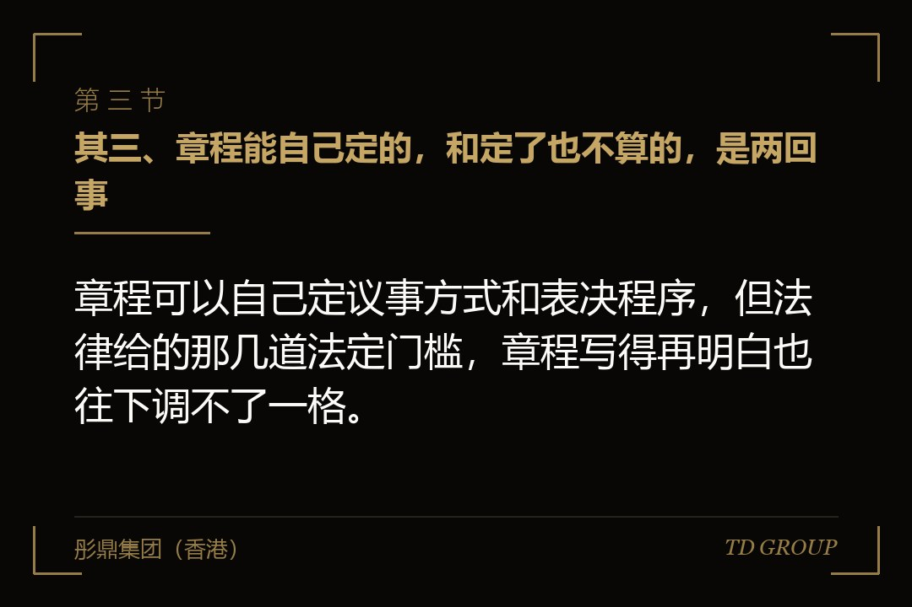

其一、交割前那一周，律师从档案盒的底下翻出一份决议

结论先行：融资交割卡住的往往不是价格也不是条款，而是档案盒底下一份几年前的会议记录，它当年就没有站住。
有家做工业软管的公司，这一轮融资谈了三个多月，交割排在月底。投资人那边的律师做历史沿革核查，把公司成立以来的档案盒一箱箱搬走复印。第四天，律师发来一个问题：七年前那次增资的股东会决议，签字页上有三个人，其中一位在开会那天已经把手上的股权全部转让出去了。
创始人的头一反应是这有什么大不了。那次增资是他自己掏钱进来的，钱进了账，注册资本也跟着变了，工商也办下来了，七年过去没有一个人有过意见。他当时的原话是，大家当时都同意了，补个字不就完了。
补不了。那位签字的人在那个时点已经不是这家公司的股东，他的签名在法律上不产生表决权。把他那一票拿掉之后，那次增资的同意票不够章程规定的门槛——这份决议缺的不是一个签名，是从来没有成立过。
而这份决议底下压着的，是它之后的每一次动作：那年的注册资本变更、次年那次股权转让、三年前那一版章程，以及现在这一轮要签的交割文件。律师那句结论写得很直白，这一段的授权链条断在七年前。
其二、一份决议要站得住，程序上要过的是这几道

结论先行：决议站不站得住先看程序，要过的是四道——谁有权召集、有没有按期限通知到每一位股东、表决比例够不够、该回避的人有没有回避。
召集是排在最前面的一道。有限责任公司的股东会一般由董事会或者执行董事召集，董事会不召集或者不能召集的，由监事会召集；监事会也不召集的，达到一定表决权比例的股东可以自行召集和主持。绕过这个顺序开的会，会开得再热闹，程序上也是有问题的。
通知是最容易被忽略的一道。章程通常会写提前多少日通知全体股东，实务里十五日是常见的约定。要紧的不是纸上写了多少日，而是有没有留下通知的凭证——聊天记录、快递单号、邮件回执，哪一样都算，什么都没有就等于没通知过。
表决比例要分事情看。日常事项按章程约定的比例，但修改章程、增加或者减少注册资本、合并分立解散或者变更公司形式这几件，要经代表三分之二以上表决权的股东通过。有限责任公司的表决权原则上按出资比例行使，章程另有规定的除外。
回避是最容易踩到的一道。公司为股东或者实际控制人提供担保，这件事要经股东会决议，而该股东或者受该实际控制人支配的股东不得参与表决，由出席会议的其他股东所持表决权过半数通过。让该回避的人投了票，这份决议的表决方式就有瑕疵。
其三、章程能自己定的，和定了也不算的，是两回事

结论先行：章程可以自己定议事方式和表决程序，但法律给的那几道法定门槛，章程写得再明白也往下调不了一格。
先说能定的。表决权是不是按出资比例行使、分红是不是按出资比例分、股东转让股权要不要经过其他股东同意、股东会提前几日通知、会议怎么记录怎么签署，这些法律都留了「章程另有规定的除外」这个口子，写进章程就按章程走。
有家做实验动物饲料的公司，五位股东，章程里把表决权写成了每人一票，跟出资比例脱钩。这个写法本身没有问题，问题出在后来那几份决议——签字的人按人数算是过了半，按出资比例却不到一半，而公司自己都忘了章程当年是怎么写的。
再说定了也不算的。三分之二以上表决权那道门槛是法定的，章程写成过半数通过，那一条在法律上不产生效力，按它开出来的决议照样站不住。剥夺股东查阅账簿的权利、约定某位股东的会议不必通知、约定股东不得就决议提起诉讼，这类条款同样如此。
所以核查一份老决议，要同时看两个东西：那件事的法定门槛，和开会当天那一版章程。两个都要对得上。实务里最常见的错，是拿现在这一版章程去核七年前那次会——章程改过几轮，当年生效的可能是完全不同的一套写法。
其四、不成立、无效、可撤销：三个词，三种完全不同的后果
结论先行：决议瑕疵分不成立、无效和可撤销三种，后果差得很远，其中有一种带着时间限制，过了那个期限就再也走不了这条路。
不成立说的是这份决议从来没有产生过。没有召开会议、开了会但没有对这件事表决、出席的人所持表决权没达到要求、或者同意票数没达到法律和章程规定的比例，都归到这一类。它的后果最重：不是被推翻，是自始就不存在。
无效说的是决议的内容违反法律和行政法规。比如决议把公司资产无偿划给某位股东，或者决议免除某位股东的实缴出资义务。这一类不看程序走没走完，程序再完整也没有用，因为问题出在内容本身。
可撤销说的是程序上有瑕疵。召集程序或者表决方式违反了法律、行政法规或者章程，或者决议内容违反了章程，股东可以请求法院撤销。但一般规则是要在决议作出之日起六十日内提出，过了这个期限，撤销这条路就走不了了；另外程序瑕疵轻微且对决议没有实质影响的，一般不予撤销。以上以当时有效的法律为准。
这里有一处反直觉的地方。六十日过去了，看着这份决议就稳了，但那只是说没有人能再去法院撤它，不等于它在尽调里是干净的。上一节那份工业软管公司的决议属于不成立，而不成立这一类没有六十日的说法——它不会因为过了几年就自己变成成立。
其五、事后追认能补的是记录，补不了的是事实
结论先行：事后追认能修的是签署与记载上的形式瑕疵，它修不了的是当年那次表决根本就没有达到门槛这件事。
能补的那一类长这样。有家做水处理药剂的公司，六位股东，某次会议开了、议题讲了、六个人当场都同意了，只是会后签字页上漏了一位股东的签名，那位股东出差回来一直没顾上补。这种情况请他补签，补的是记录，不改变任何事实。
补不了的那一类是另一回事。让一个在那个时点没有表决权的人现在签字，签出来的是一份说不通的东西——他签的是七年前那天的意思表示，而他那天不是股东。这不是把纸补齐，是把一件没发生过的事写成发生过。
真正的出路只有重新做一次。按现在的股东名册、按当时那件事该走的门槛，重新召集、重新表决、重新形成一份决议，并且在决议里把要追认的事项写清楚。要注意的是，新决议一般从作出之日起生效，它不会把中间那几年自动填平。
所以在尽调那张表上，这两类瑕疵对应的是完全不同的答案。一类回一句「已补签，附件见后」就过去了；另一类要回的是一整套补正方案，包括重新开会的时点、参与的人，以及中间那几年的动作怎么解释。差别不在瑕疵大小，在于那件事当年到底有没有成立。
其六、一份带病的决议，是怎么一路传下去的
结论先行：决议是后面每一份文件的授权来源，它站不住，靠它办成的增资、股权转让、章程修改和法定代表人变更就都少了依据。
传导的路径是这样的。一次增资要先有股东会决议，决议之后才是增资协议、出资凭证、章程修改、注册资本变更登记。一次股权转让也一样，决议之后才是转让协议、其他股东放弃优先购买权的书面文件、股东名册变更、工商变更。最前面那一份倒了，后面每一份都站在空地上。
有家做电梯部件的公司，最初那份决议出了问题之后，往下数出四件事都受影响：那年的注册资本数字、次年新进那位股东的持股比例、三年前那一版章程里的表决条款，以及现在营业执照上写的法定代表人。四件事分布在四个年份，摆在一起之前看着毫不相干。
这里有一个很多老板会误解的点。工商登记不审查决议的实质效力，它看的是材料形式上齐不齐、签字盖章有没有。所以决议有瑕疵，登记照样能办下来，营业执照照样发出来。登记办成了说明的是材料交齐了，不是这份决议站得住。
传导还有一个方向是往人身上走。某个环节的持股比例算错了，实际控制人是谁这道题的地基就跟着动，而那道题连着一致行动关系、连着关联方认定、连着上市申报里的一系列安排。这道题怎么认定、看的是哪几项，在实际控制人那个题目下另有专文，这里不重复。
其七、到了交割这一步，它具体卡在哪三处
结论先行：一份老决议站不住，会同时卡住交割先决条件、创始人的陈述与保证，以及律师意见书这三处，一处都绕不开。
先决条件那一处最直接。交割条件表里通常有一条，要求公司历史上各次增资、股权转让、章程修改均已取得必要的内部授权且合法有效。这一条划不掉，钱就不到账。它不是可以谈的商业条款，是投资人律师的标准动作。
陈述与保证那一处最贵。创始人要对公司历史沿革合法有效、股权不存在权属纠纷作出保证。这份保证一旦不实，触发的不是重新谈价格，是赔偿条款——投资人不需要证明自己损失了多少，他只需要指出保证不实。
律师意见书那一处最硬。律师要对股权清晰、历史沿革合规出一个结论，而他手上这份决议站不住的时候，他能做的只有三种：出保留意见、要求先补正，或者在意见书里把这件事完整披露。三种里没有一种是就这样放过去。
后面这一层更要紧。这三处只是这一轮的账，如果企业还打算往上走一步，历史沿革这一段会被再翻一遍，而且翻得更细。这一轮补过一次的东西，下一轮不用再补；这一轮糊过去的东西，下一轮要连着这一轮一起解释。
其八、这些年的决议，自己先翻一遍
结论先行：把公司成立至今的每一份决议按时点拉出来，逐份对六件事，能自己发现的问题不必等律师来发现。
拉清单这个动作不复杂。有家做园林苗木的公司，创始人用了一个下午，把成立至今十一年的决议按年份摆开，一共二十九份，其中六份找不到通知的凭证，两份签字页上的人在开会那天已经退了股。这一个下午省下的，是后来那三个月。
逐份要对的是六件事：开会那天的股东名册上是谁；通知是怎么发的、有没有凭证；那件事按当时那一版章程和法律该过什么门槛；实际的同意票够不够那个门槛；签字页上每个人在那个时点是不是股东；有没有该回避的人参与了表决。
对完之后分三堆。形式瑕疵那一堆走补签；不成立那一堆列出重新开会的方案和时点；拿不准的那一堆写清楚为什么拿不准，交给律师去判断。三堆都要留一份书面说明——尽调问到的时候，能拿出说明的和答不上来的，是两种完全不同的印象。
有位企业主在一次私董会上说过一句话，他说他这些年最贵的一课不是谈错了一个估值，是七年前少花了二十分钟。华尔街彤鼎俱乐部里这类复盘听得多了，形状基本都一样。当年那件事本来很便宜，是被时间和后面一连串动作一层层加了价。关键在于，这些年的决议现在就能自己翻一遍，不必等到交割前那一周。